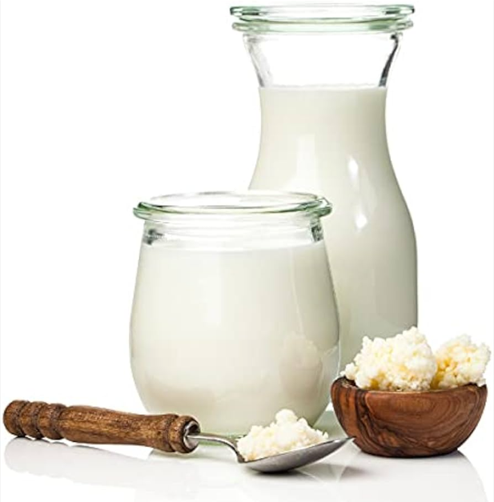
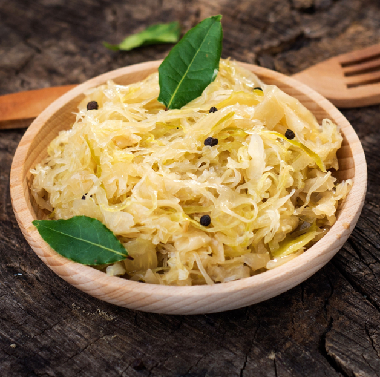
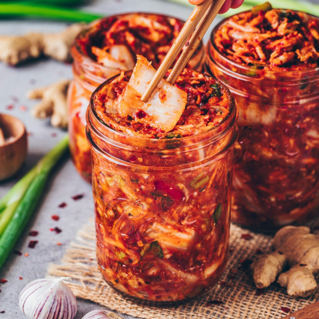
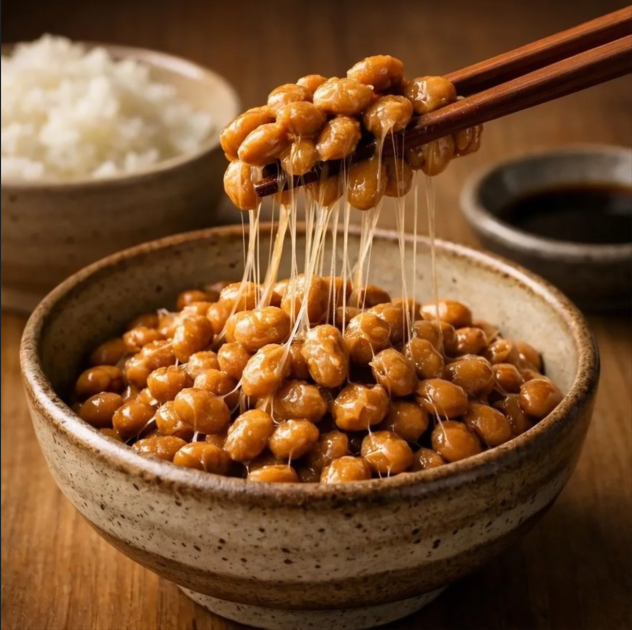
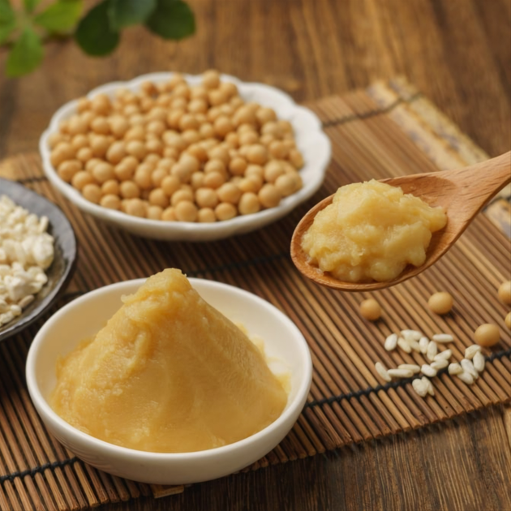
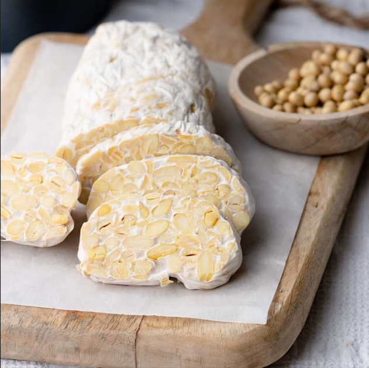

Alimentos Fermentados: o que são e quais são seus benefícios para a saúde?
O que são alimentos fermentados?
Os alimentos fermentados são produtos obtidos por meio de um processo natural ou controlado chamado fermentação, no qual microrganismos, como bactérias, leveduras e fungos, transformam determinados componentes dos alimentos. Durante esse processo, substâncias como açúcares e carboidratos são convertidas em outros compostos, como ácidos orgânicos, gases e, em alguns casos, álcool.
A fermentação é uma técnica utilizada há milhares de anos por diferentes povos e culturas, principalmente como uma forma de conservar alimentos por mais tempo. Além de contribuir para a conservação, esse processo modifica características como sabor, aroma e textura, dando origem a alimentos com propriedades bastante diferentes de seus ingredientes originais.
Outra característica importante é que a fermentação pode modificar a composição nutricional dos alimentos. Dependendo dos microrganismos envolvidos e das condições do processo, pode ocorrer a redução de determinadas substâncias que dificultam a absorção de minerais, além da formação ou maior disponibilidade de alguns nutrientes. Em certos alimentos, a fermentação também facilita a digestão de componentes como a lactose.
Entre os alimentos fermentados mais conhecidos estão o iogurte, o kefir, a kombucha, o chucrute, o kimchi e produtos derivados da soja, como o missô, o tempeh e o natto. Cada um apresenta características próprias, pois é produzido com ingredientes e microrganismos diferentes. Alguns desses alimentos também podem conter microrganismos vivos, que, dependendo de suas características e quantidades, podem contribuir para a saúde intestinal.
Saiba um pouco mais sobre os beneficios dos alimentos fermantados:
O consumo de alimentos fermentados pode trazer diferentes benefícios à saúde. Seus efeitos variam conforme o alimento, os microrganismos envolvidos no processo e a quantidade consumida.
Quais são os principais alimentos fermentados?
Existem diversos alimentos fermentados consumidos ao redor do mundo. Cada um possui características próprias, dependendo dos ingredientes utilizados e dos microrganismos responsáveis pela fermentação.

Kefir
É uma bebida fermentada que pode ser produzida a partir do leite ou da água. O kefir de leite é preparado com grãos que contêm uma combinação de bactérias e leveduras. É conhecido pela diversidade de microrganismos presentes em sua composição.

Chucrute
É preparado a partir do repolho fermentado, geralmente com sal. É fonte de fibras e pode conter microrganismos vivos quando não passa por processos que eliminam essas culturas, como determinados tratamentos térmicos.

Kimchi
É um alimento tradicional da culinária coreana, produzido pela fermentação de vegetais, principalmente repolho e rabanete, com ingredientes como alho, gengibre e pimenta. Contém fibras e diversos compostos provenientes dos vegetais utilizados.
Iogurte
É produzido pela fermentação do leite por bactérias específicas. Possui proteínas, cálcio e, dependendo do produto, microrganismos vivos que podem contribuir para a saúde intestinal.

Natto
É um alimento japonês produzido pela fermentação da soja com a bactéria Bacillus subtilis var. natto. Possui uma textura característica e é conhecido por conter vitamina K2, além de proteínas e outros nutrientes.

Misso
É uma pasta tradicional japonesa produzida pela fermentação da soja, geralmente com sal e o fungo Aspergillus oryzae. É utilizada principalmente no preparo de sopas, molhos e temperos.
Kombucha
É uma bebida produzida pela fermentação de chá, geralmente preto ou verde, com a participação de bactérias e leveduras. Apresenta ácidos orgânicos e compostos provenientes do chá, incluindo substâncias antioxidantes. Sua composição varia conforme o preparo e o tempo de fermentação.

Tempeh
É um alimento de origem indonésia produzido pela fermentação da soja com fungos específicos. É uma fonte de proteínas vegetais e pode ser utilizado como alternativa à carne em diferentes preparações.